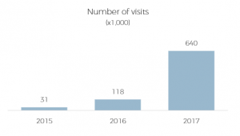
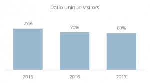
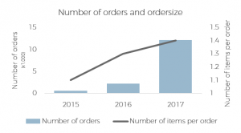
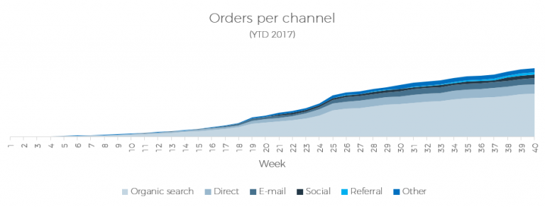
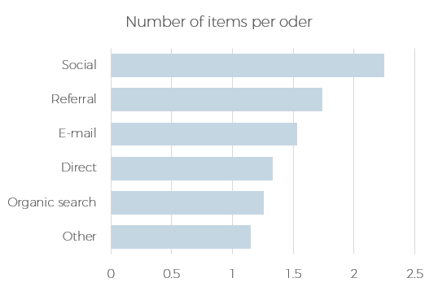

DATA ANALYSIS
GOAL
Often, companies have data that contain a lot of hidden information. Asking the right questions and analyzing the data will give you relevant insights. the goal is to answer the right questions that will help the company to make the right decisions.
RESULT
Results are presented in a report with recommendations and follow-up steps. Based on this report, clear and well-founded decisions can be made, costs can be saved and processes optimized.
CASE HOW CAN I OPTIMIZE THE SALES FUNNEl?
For a webshop I have done an extensive analysis to optimize the sales funnel. The webshop wanted to know when people drop out during the ordering process and whether a distinction could be made between different types of customers. When the sales funnel is optimized according to the (summary) analysis below, turnover can potentially increase by 5.8%.
HOW MANY VISITORS DOES THE WEBSHOP HAVE AND HOW MANY ORDERS?
In 2017, the number of visitors increased because of campaigns. The percentage of unique visitors remained relatively stable over the past three years. The number of orders increased along with the number of visitors, but the number of items per order didn’t reach the level they hoped for.
  WHAT DOES THE SALES FUNNEL LOOK LIKE AND WHERE DO VISITORS DROP OUT?
Together with the webshop we identified the processes a visitor goes through until the purchase is done. Using Google Analytics and the own systems of the webshop we were able to check which visitors visit the website and which process they go through.

More than 60% of the visitors visit the website via organic search, these are visitors who found the website via a search engine. 14% of the traffic comes from visitors who entered the website themselves in the browser, followed by e-mail (9%), social (5%), referral (3%) and other (6%)
When visitors reached the website, I found three situations in the order process where people often do not complete their order. For each situation I looked at how to improve this
1 . People add products to their shopping cart, but they do not view the contents of the total basket (loss of 2.6% of the visitors). Solution: display the icon of the shopping basket more prominently and if there are at least two items in the shopping cart, display a pop-up to navigate to the total shopping basket.
2 . After people viewed their total shopping basket, 2.2% leaves the website during the process of logging in or creating an account. Solution: people can also pay as a guest without creating an account.
3 . 1% of the visitors leave the order process after they saw the total order amount. The two most common causes are unexpected costs (delivery costs) or unaccepted voucher codes. Solution: mention delivery costs clearly on the website and show the telephone number if a voucher code is not accepted.
By making the above adjustments, the number of orders can increase by a maximum of 5.8%.
WHICH CHANNELS ARE MOST EFFECTIVE?
When I look further into the ordering process, I found visitors who reach the website via e-mail are more likely to place an order. One reason for this is that people are automatically logged in on the website after clicking on the e-mail. Therefore, the percentage of people who leave the ordering process between viewing the shopping basket and checking the delivery data is much lower.
E-mails are especially effective around special days. The graph below shows that more orders are placed around Mother’s Day and Father’s Day because of an e-mail.
At the moment, there is no clear e-mail strategy within the company. As a result of this research, an e-mail strategy is set up which takes into account the frequency of the e-mails, the moment of send out, a clear CTA and an appropriate discount.
WHAT IS THE AVERAGE ORDER SIZE?
We would like to increase the number of orders, but it is also interesting to increase the number of items per order. That’s why I looked at the number of items ordered per channel.
The average order size is 1.4 items per order. Social is a channel where people do not often place an order, but the average order size is high
